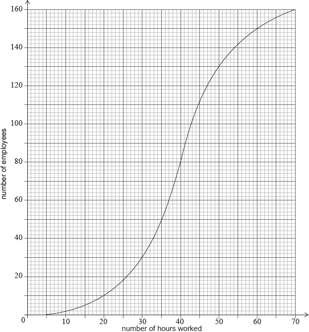

A city hired 160 employees to work at a festival. The following cumulative frequency curve shows the number of hours employees worked during the festival.

The city paid each of the employees £8 per hour for the first 40 hours worked, and £10 per hour for each hour they worked after the first 40 hours.
Find the median number of hours worked by the employees.
Write down the number of employees who worked 50 hours or less.
Find the amount of money an employee earned for working 40 hours;
Find the amount of money an employee earned for working 43 hours.
Find the number of employees who earned £200 or less.
Only 10 employees earned more than £. Find the value of .